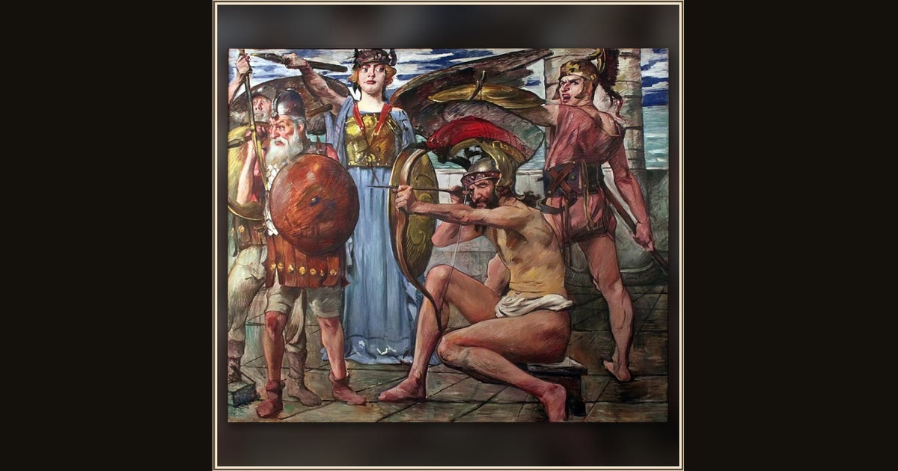

Odysseus Fighting the Suitors
Lovis Corinth · 1913 · Berlinische Galerie · Berlin, Germany
In Lovis Corinth’s big, stormy painting, Odysseus plants himself at the doorway and at last stands up to the suitors who took over his hall. Explore its place in Book XXII of the Odyssey.